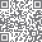
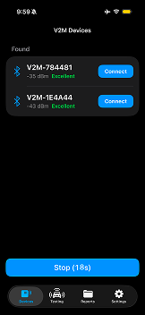
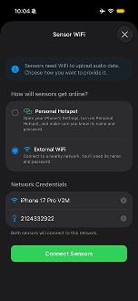
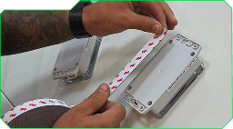
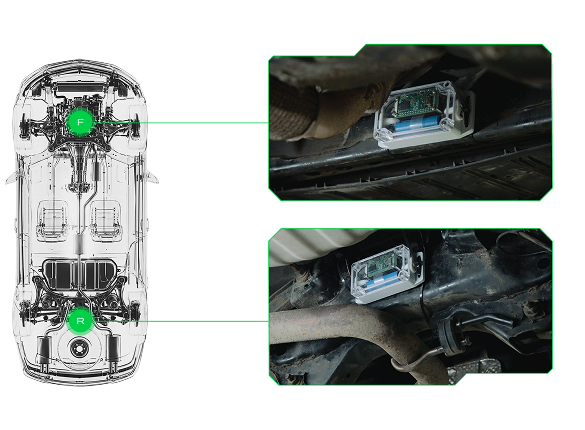
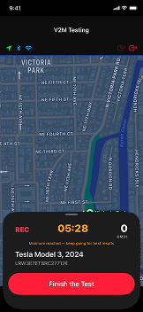

USER GUIDE
V2MOne app and V2MOne sensors
INTRODUCTION
Welcome to V2M. This guide walks you through installing the V2MOne app, checking your kit, preparing the sensors, mounting them on your vehicle, running a diagnostic test drive, and reviewing your report. The V2MOne sensors are the wireless devices you mount on the vehicle to capture its acoustic signature during the drive. Throughout the rest of this guide, they are referred to simply as “the sensors.”
1. Install the V2MOne app. Scan the QR code below to open the app download page. The link works for both iOS (App Store) and Android (Google Play).
After installation, open the app and log in with the credentials provided to you.
2. Check your kit. Before you begin, confirm that your box contains all of the following items:
- 2 (or 4) × V2MOne sensor
- 1 × wireless charging platform
- 1 × USB-C cable
- 1 × power supply (wall adapter)


Scan the QR code to access the installation guide video
Preparing for use
Complete the following steps once, before the first test drive. The same steps apply each time you use the system after an extended break.
1. Assemble the charger. Connect the power supply to the wireless charging platform using the USB-C cable, then plug the power supply into a wall outlet.
2. Turn on both sensors. Press and hold the power button on each sensor until you hear two beeps. To turn a sensor off, press the button once, then press and hold it for about 5 seconds until you hear three beeps.
3. Charge the sensors. Place both sensors on the charging platform. The platform's indicator LEDs are red when a sensor is not properly seated and turn blue once charging begins correctly. Do not continue until both LEDs are blue.
4. Open the V2MOne app and sign in with your account credentials. You can sign in with your email and password, or use Face ID if your device supports it and you have it enabled for the V2MOne app.
5. Pair the sensors. In the app, open the Devices screen and make sure both sensors appear in the list of discovered devices. Tap Connect next to each sensor to pair it with the app.

From this screen you can also switch the sensors' Front/Rear positions, remove a sensor, or locate a sensor — swipe right on the sensor entry to access these actions.
6. Connect the sensors to Wi-Fi. The sensors need a Wi-Fi connection to send audio data to the V2M server for analysis. Until this step is complete, each sensor card on the Devices screen will show WiFi not connected. On the Devices screen, tap the green WiFi button to open the Sensor WiFi screen. You have two options:
- Use Personal Hotspot — share your phone's cellular data with the sensors.
- Use External WiFi — connect the sensors to a nearby Wi-Fi network, such as a shop or home network.
Enter the network name and password in the Network Credentials fields and tap Connect Sensors. Both sensors will connect to the same network. Each sensor will then show a green checkmark with its assigned IP address. Tap Done to return to the Devices screen, where each sensor will display the network name and IP instead of WiFi not connected.
Personal Hotspot setup. iOS does not allow apps to read your hotspot credentials or open Personal Hotspot directly, so the setup has to be done by hand the first time you use it. Open the iOS Settings app, tap Personal Hotspot, and turn on Allow Others to Join. Then enter the credentials in the V2MOne app. They must match exactly:
- Network name — your iPhone's name, set in Settings → General → About → Name. For example, iPhone 17 Pro V2M.
- Password — shown in Settings → Personal Hotspot → Wi-Fi Password.

7. Check the battery level. Before starting a diagnostic session, make sure each sensor's battery level is at least 40%.
8. Install the sensors on the vehicle. With the sensors turned on and paired, mount them on the vehicle according to the appropriate Sensor Installation Guide on the following pages — ICE or EV.
Mounting the sensors
Choose your mounting method. Both methods are field-proven and universal: they work on any vehicle — gas, hybrid, or electric, with or without an underbody shield — and neither makes any permanent change to the car.
Recommended: Mode A — Double-sided tape strips (included). The fastest install; holds on any flat, clean surface.
When in doubt: Mode B — Zip ties. Use them when you
are unsure the tape will hold — the surface is cold, dusty, oily, or
curved — or when you want mechanical backup, and the panel has
openings, slots, or an edge to loop through.
In both modes, mount the sensors between the wheels, close to the
vehicle centerline, with the microphones facing left and right and the
base level with the road.
Mode A: Double-sided tape strips, recommended.
- Wipe the sensor base and the mounting spot with isopropyl alcohol and let them dry. On plastic panels this step is required.
- Apply exactly two tape strips (about 0.8 × 3 in / 20 × 80 mm) along the base edges, clear of the microphone ports.
- Press hard over each strip for 10–15 seconds.
- Wait 15–20 minutes before starting the test drive.
Note. Do not apply tape below 50 °F (10 °C). The adhesive reaches half strength in 20 minutes and 90 % in a day.
Removal. Saw through the foam with fishing line or dental floss, then roll the residue off with IPA. Never pry or pull the housing straight off.


Mode B: Zip ties, when in doubt.
- Hold the sensor against the panel in its position. The microphones face left and right.
- Route two zip ties over the sensor body and through the openings or slots in the panel — or around a reachable edge.
- Tension each tie until snug. The sensor must not rotate or slide when you push it by hand.
- Trim the tie tails flush so nothing rattles in the airflow.
Note. Nothing to loop a tie through at the right spot? Clean the surface thoroughly and use tape strips (Mode A) — don’t stretch a tie to a far-away opening at an angle.
Removal. Cut the ties and pull them out. Use fresh ties for every install — never reuse a closed tie.
Sensor installation guide — ICE vehicles
Follow these steps for vehicles with an internal combustion engine (ICE).
1. With both sensors turned on, begin installation on the vehicle.
Attach the sensor as described in Mounting the Sensors, then continue
below.
2. Pay particular attention to sensor positioning. Both the front and rear sensors must be placed between the wheels, as close as possible to the vehicle's centerline.
3. Remove the sensors after the test drive is complete.

Scan the QR code to access the installation guide video
Sensor installation guide — EV vehicles
Follow these steps for battery electric vehicles (EV).
1. With both sensors turned on, begin installation on the vehicle.
Attach the sensor as described in Mounting the Sensors, then continue
below.
2. Mount the sensors in the front and rear trunks (frunk and trunk). Center each sensor so that the microphones face the left and right sides of the trunk compartment, and keep the sensor horizontally aligned with the road surface.
3. Remove the sensors after the test drive is complete.

Scan the QR code to access the installation guide video
Running a diagnostic session
Once the sensors are mounted on the vehicle, switch to the V2MOne app to set up the test and start the diagnostic session.
1. Open the Testing tab. In the V2MOne app, tap the Testing tab to begin a new session.
2. Enter the vehicle information.
3. Start the test. Once all required vehicle information has been entered, the Start the test button becomes active. The V2MOne app is now ready to run the diagnostic.
Performing the test drive
With the sensors installed, paired, and the session started in the V2MOne app, drive the vehicle the way you normally would. The system is designed to work with real-world driving — there is no prescribed route, speed, or technique you need to follow.
If you are aware of a specific sound or vibration you want diagnosed and you know the conditions under which it typically appears — a particular speed range, a turn, braking, a cold engine, a certain type of road surface, and so on — try to reproduce those conditions during the drive. The more faithfully your drive replicates the situation in which the issue occurs, the better V2M can isolate its cause.
The device running the V2MOne app can sit anywhere in the cabin — no specific mount or placement is required. If the Bluetooth connection between the device and the sensors drops during the drive, the sensors keep recording on their own. Once the device is back within range, the session is synced automatically: it appears in the app, the recording is uploaded to the server, the model processes the data, and the diagnostic report is delivered as usual.
Location permissions. For the route to display correctly on the map in your report, the V2MOne app needs access to your location. The simplest setup is to grant the V2MOne app location permission as Always Allow in your phone's settings. If you prefer While Using the app, keep the V2MOne app in the foreground for the entire test — switching to another app or locking the screen pauses location capture. When this happens, the missing segment appears on your route map as a straight line between the points where capture stopped and resumed, instead of your actual path. The same gap can also affect the average and maximum speed shown in your report, since both values are calculated from location data.
Session duration. The test runs up to 10 minutes, at which point the V2MOne app automatically ends the session. For a reliable diagnostic with a confidence grade from the model, let the session run for at least 9 minutes. A session that ends between 5 and 9 minutes may still produce a result, but success is not guaranteed. A session shorter than 5 minutes will fail and will need to be re-run.

Ending the session and reviewing results
When V2MOne app ends the session, the app automatically switches to the Reports tab. Reports are sorted by date and time with the most recent first, so your latest report appears at the top of the list.

The status of the report updates in real time as the recording is uploaded, processed by the V2M model, and graded. Report generation typically takes no more than two minutes. The exact time depends on whether the sensors were connected to Wi-Fi during the test (see Connect the sensors to Wi-Fi in Preparing for Use) and on the quality of the cellular or Wi-Fi connection available at your location, both during the test and while the report is being generated.
What's in the report. Each report is a comprehensive summary of your vehicle's acoustic signature — the unique pattern of sounds and vibrations captured by the sensors during the drive — and what V2M's analysis found in it. Tap any report in the list to open it. A report includes:
- An overall letter grade summarizing the condition of the vehicle.
- A plain-language assessment explaining what the grade means and any recommended next steps.
- Vehicle and test details — make, model, year, VIN, location, test date and time, duration, and average and maximum speed.
- A map of your diagnostic driving route with start and end markers.

How to read the grade. The four grade levels are color-coded for at-a-glance interpretation:
| A | No issues detected. The vehicle is running like new. |
|---|---|
| B | Minor sound variations within normal range. |
| C | Noticeable irregularities. The vehicle is safe to drive but should be inspected soon. |
| D | Significant irregularities. Schedule a diagnostic inspection as soon as possible. |
Sharing and printing. Each report can be exported from the V2MOne app as a PDF. Open the report and tap Share PDF to send it to a mechanic, attach it to a service request, or print it. View PDF opens a preview before sharing.